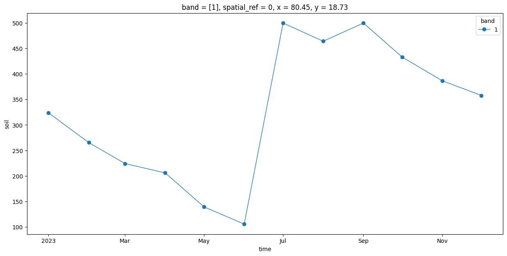

Extracting Time Series at Multiple Points with Xarray#
Introduction#
This notebook shows how to use XArray to efficiently extract a time-series at multiple coordinates. You will also learn how to use XArray to construct a datacube from individual cloud-hosted files and sample data from it with minimal data transfer.
Overview of the Task#
We will take 12 individual Cloud-Optimized GeoTIFF (COG) files representing Soil Moisture for each month of a year, create a XArray Dataset from it and extract the soil moisture values for each month at multiple different locations.
Input Layers:
soil_moisture_202301.tif,soil_moisture_202302.tif…: Cloud-Optimized GeoTIFF files representing average soil misture for each month. This files were exported from TerraClimate data hosted on Google Earth Engine using. See reference script
Output:
soil_moisture.csv: A CSV file containing extracted monthly soil moisture values at 3 different coordinates.
Data Credit:
Abatzoglou, J.T., S.Z. Dobrowski, S.A. Parks, K.C. Hegewisch, 2018, Terraclimate, a high-resolution global dataset of monthly climate and climatic water balance from 1958-2015, Scientific Data 5:170191, doi:10.1038/sdata.2017.191
Running the Notebook:
The preferred way to run this notebook is on Google Colab.

Setup and Data Download#
The following blocks of code will install the required packages and download the datasets to your Colab environment.
%%capture
if 'google.colab' in str(get_ipython()):
!pip install rioxarray dask[distributed]
import datetime
import glob
import os
import re
import matplotlib.pyplot as plt
import numpy as np
import pandas as pd
import geopandas as gpd
import xarray as xr
import rioxarray as rxr
import zipfile
Setup a local Dask cluster. This distributes the computation across multiple workers on your computer.
from dask.distributed import Client
client = Client() # set up local cluster on the machine
client
If you are running this notebook in Colab, you will need to create and use a proxy URL to see the dashboard running on the local server.
if 'google.colab' in str(get_ipython()):
from google.colab import output
port_to_expose = 8787 # This is the default port for Dask dashboard
print(output.eval_js(f'google.colab.kernel.proxyPort({port_to_expose})'))
data_folder = 'data'
output_folder = 'output'
if not os.path.exists(data_folder):
os.mkdir(data_folder)
if not os.path.exists(output_folder):
os.mkdir(output_folder)
Data Pre-Processing#
In this example, we have a folder on Google Cloud Storage (GCS) has 12 Cloud-Optomized GeoTIFF files representing soil moisture for each month. The file URIs are as below
gs://spatialthoughts-public-data/terraclimate/soil_moisture_202301.tif
gs://spatialthoughts-public-data/terraclimate/soil_moisture_202302.tif
gs://spatialthoughts-public-data/terraclimate/soil_moisture_202303.tif
...
First we create an XArray Dataset from these individual files.
The files will be read using the GDAL library which allows reading cloud-hosted files directly. Files on Google Cloud Storage can be read using the /vsigs/ prefix. Since our files are public, we specify the GS_NO_SIGN_REQUEST=YES option. For accessing data on private bucket, see the authentication options specified in GDAL and Google Cloud Storage (GCS)
.
os.environ['GS_NO_SIGN_REQUEST'] = 'YES'
prefix = '/vsigs/spatialthoughts-public-data/terraclimate/'
# Create a list of URIs with /vgigs/ prefix
urls = []
for month in range(1, 13):
image_id = f'soil_moisture_2023{month:02d}.tif'
path = prefix + image_id
urls.append(path)
urls
def path_to_datetimeindex(filepath):
filename = os.path.basename(filepath)
pattern = r'soil_moisture_(\d+).tif'
match = re.search(pattern, filepath)
if match:
doy_value = match.group(1)
timestamp = datetime.datetime.strptime(doy_value, '%Y%m')
return timestamp
else:
print('Could not extract DOY from filename', filename)
timestamps = []
filepaths = []
for filepath in urls:
timestamp = path_to_datetimeindex(filepath)
filepaths.append(filepath)
timestamps.append(timestamp)
unique_timestamps = sorted(set(timestamps))
scenes = []
for timestamp in unique_timestamps:
filename = f'soil_moisture_{timestamp.strftime('%Y%m')}.tif'
filepath = prefix + filename
print(f'Reading {filepath}')
scene = rxr.open_rasterio(filepath, chunks={'x':512, 'y':512})
scenes.append(scene)
time_var = xr.Variable('time', list(unique_timestamps))
time_series_scenes = xr.concat(scenes, dim=time_var)
time_series_scenes
<xarray.DataArray (time: 12, band: 1, y: 4321, x: 8641)> Size: 4GB
dask.array<concatenate, shape=(12, 1, 4321, 8641), dtype=float64, chunksize=(1, 1, 512, 512), chunktype=numpy.ndarray>
Coordinates:
* time (time) datetime64[ns] 96B 2023-01-01 2023-02-01 ... 2023-12-01
* band (band) int64 8B 1
* y (y) float64 35kB 89.98 89.94 89.9 ... -89.94 -89.98 -90.02
* x (x) float64 69kB -180.0 -179.9 -179.9 ... 179.9 180.0 180.0
spatial_ref int64 8B 0
Attributes:
AREA_OR_POINT: Area
scale_factor: 1.0
add_offset: 0.0
long_name: soilPlotting the time-series#
We extract the time-series at a specific X,Y coordinate.
time_series = time_series_scenes.interp(x=80.449, y=18.728)
fig, ax = plt.subplots(1, 1)
fig.set_size_inches(15, 7)
time_series.plot.line(ax=ax, x='time', marker='o', linestyle='-', linewidth=1)
plt.show()

Extracting Time-Series at Multiple Locations#
locations = [
('Location 1', 80.449, 18.728),
('Location 2', 79.1488, 15.2797),
('Location 3', 74.656, 25.144)
]
df = pd.DataFrame(locations, columns=['Name', 'x', 'y'])
geometry = gpd.points_from_xy(df.x, df.y)
gdf = gpd.GeoDataFrame(df, crs='EPSG:4326', geometry=geometry)
gdf
| Name | x | y | geometry | |
|---|---|---|---|---|
| 0 | Location 1 | 80.4490 | 18.7280 | POINT (80.449 18.728) |
| 1 | Location 2 | 79.1488 | 15.2797 | POINT (79.1488 15.2797) |
| 2 | Location 3 | 74.6560 | 25.1440 | POINT (74.656 25.144) |
x_coords = gdf.geometry.x.to_xarray()
y_coords = gdf.geometry.y.to_xarray()
sampled = time_series_scenes.sel(x=x_coords, y=y_coords, method='nearest')
Convert the sampled dataset to a Pandas Series.
sampled_df = sampled.to_series()
sampled_df.name = 'soil_moisture'
sampled_df = sampled_df.reset_index()
sampled_df.head()
| time | band | index | soil_moisture | |
|---|---|---|---|---|
| 0 | 2023-01-01 | 1 | 0 | 322.5 |
| 1 | 2023-01-01 | 1 | 1 | 33.5 |
| 2 | 2023-01-01 | 1 | 2 | 25.1 |
| 3 | 2023-02-01 | 1 | 0 | 264.4 |
| 4 | 2023-02-01 | 1 | 1 | 26.4 |
Add a formatted time column
sampled_df['formatted_time'] = sampled_df['time'].dt.strftime("%Y_%m")
sampled_df.head()
| time | band | index | soil_moisture | formatted_time | |
|---|---|---|---|---|---|
| 0 | 2023-01-01 | 1 | 0 | 322.5 | 2023_01 |
| 1 | 2023-01-01 | 1 | 1 | 33.5 | 2023_01 |
| 2 | 2023-01-01 | 1 | 2 | 25.1 | 2023_01 |
| 3 | 2023-02-01 | 1 | 0 | 264.4 | 2023_02 |
| 4 | 2023-02-01 | 1 | 1 | 26.4 | 2023_02 |
Convert this to a wide table, with each month’s value as a column.
wide_df = sampled_df.pivot(index='index', columns='formatted_time', values='soil_moisture')
wide_df = wide_df.reset_index()
wide_df.iloc[:, :10]
| formatted_time | index | 2023_01 | 2023_02 | 2023_03 | 2023_04 | 2023_05 | 2023_06 | 2023_07 | 2023_08 | 2023_09 |
|---|---|---|---|---|---|---|---|---|---|---|
| 0 | 0 | 322.5 | 264.4 | 223.0 | 204.8 | 138.1 | 104.7 | 498.9 | 462.5 | 498.9 |
| 1 | 1 | 33.5 | 26.4 | 21.8 | 18.7 | 16.3 | 14.5 | 125.6 | 51.1 | 67.2 |
| 2 | 2 | 25.1 | 21.2 | 18.4 | 16.3 | 14.6 | 13.7 | 34.6 | 27.5 | 37.7 |
Merge the extracted value with the original data.
merged = pd.merge(gdf, wide_df, left_index=True, right_index=True)
merged.iloc[:, :10]
| Name | x | y | geometry | index | 2023_01 | 2023_02 | 2023_03 | 2023_04 | 2023_05 | |
|---|---|---|---|---|---|---|---|---|---|---|
| 0 | Location 1 | 80.4490 | 18.7280 | POINT (80.449 18.728) | 0 | 322.5 | 264.4 | 223.0 | 204.8 | 138.1 |
| 1 | Location 2 | 79.1488 | 15.2797 | POINT (79.1488 15.2797) | 1 | 33.5 | 26.4 | 21.8 | 18.7 | 16.3 |
| 2 | Location 3 | 74.6560 | 25.1440 | POINT (74.656 25.144) | 2 | 25.1 | 21.2 | 18.4 | 16.3 | 14.6 |
Finally, we save the sampled result to disk as a CSV.
output_filename = 'soil_moisture.csv'
output_path = os.path.join(output_folder, output_filename)
output_df = merged.drop(columns=['geometry', 'index'])
output_df.to_csv(output_path, index=False)
If you want to give feedback or share your experience with this tutorial, please comment below. (requires GitHub account)